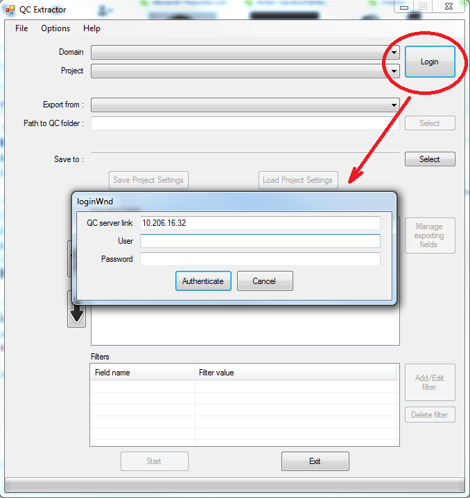

Connection to HP Quality Center required :
- QC server link - QC address (e.g. "10.206.16.32", "http://10.206.16.32:8080/qcbin/start_a.jsp")
- User Name
- Password
Click button "Login", then enter QC server link and credentials in pop-up window and click "Authenticate" button
Error pop-up will be displayed if connection not established. NOTE: be sure that you have Internet connection and had installed HP adding (see System Requirements)
If connection was established, available Domains and projects will be displayed in respective list boxes
